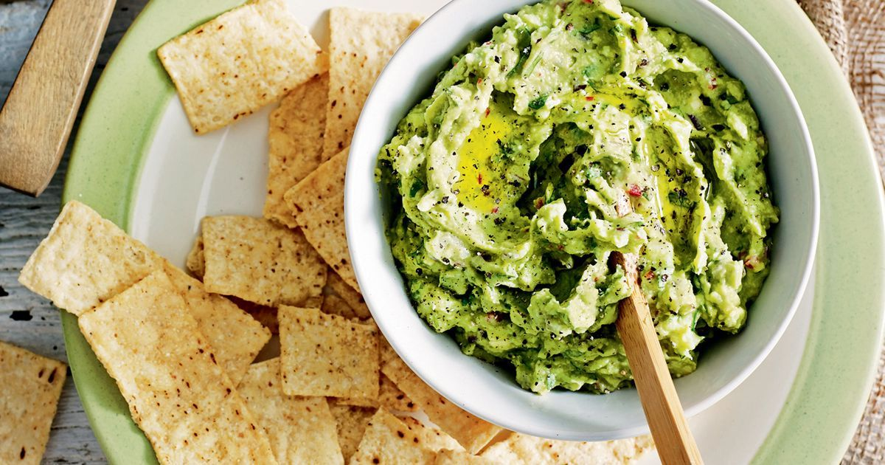

Home
Tasty Guacamole Recipe

Ingredients
- 3 avocadoes - peeled, pitted and mashed
- 1 lime, juiced
- 1 teaspoon salt
- 2 roma tomatoes
- 1/2 cup diced onion
- 3 teaspoons chopped fresh cilantro>/li>
- 1 pinch ground cayenne pepper
Method
-
Mash avocados, lime juice, and salt together in a medium bowl; mix in tomatoes, onion, cilantro, and garlic.
Stir in cayenne pepper.
-
Serve immediately, or cover and refrigerate for 1 hour for improved flavor.